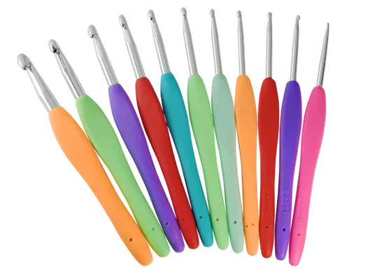
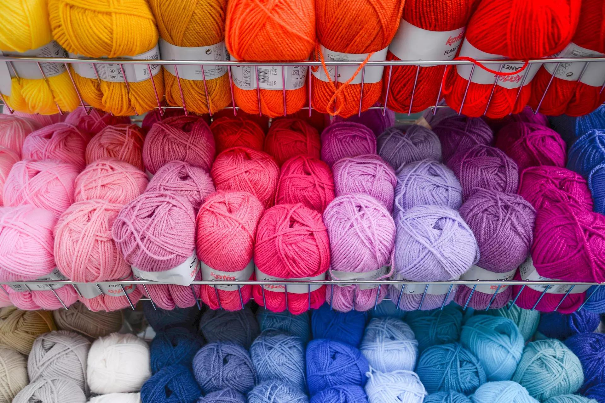
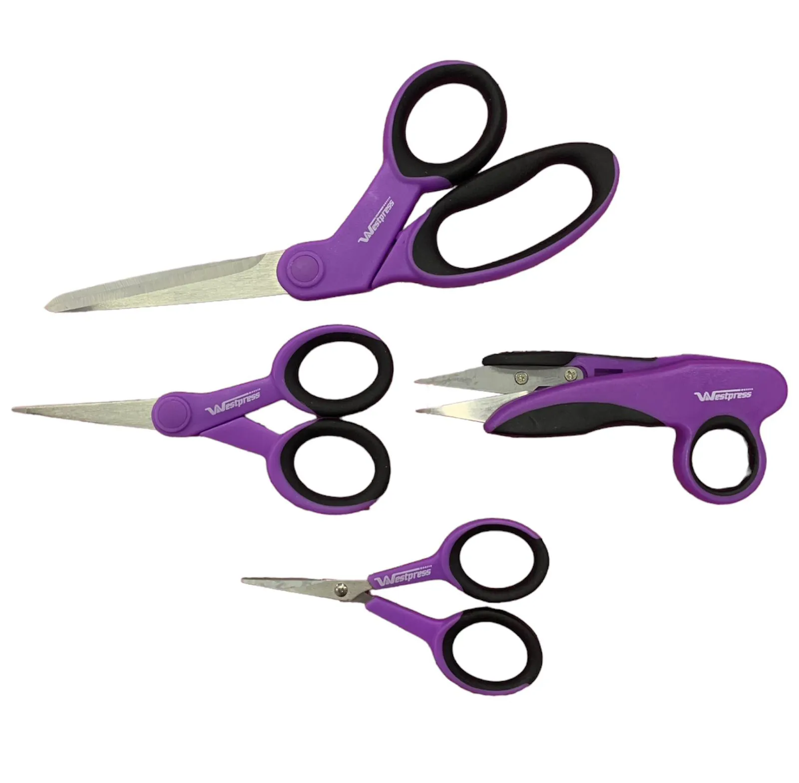
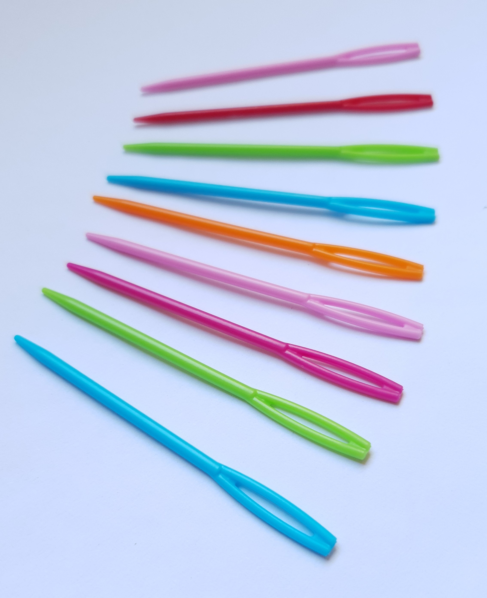

Para começar a fazer crochê, você precisará de alguns suprimentos básicos:
Elas vêm em vários tamanhos e são marcadas com uma letra ou número para indicar o tamanho. O tamanho da agulha determina o tamanho dos pontos que você cria. É uma boa ideia ter uma variedade de tamanhos para acomodar diferentes espessuras de fio e requisitos de projeto. 
FioO fio está disponível em uma vasta gama de cores, texturas e espessuras. É importante escolher o fio adequado para o seu projeto. Fios mais grossos funcionam bem para itens volumosos e quentes, enquanto fios mais finos são mais adequados para criações delicadas e leves. 
TesouraVocê precisará de uma tesoura afiada para cortar o fio quando necessário. 
Agulha para FioUma agulha para fio, também chamada de agulha de tapeçaria, é usada para esconder as pontas soltas e finalizar seus projetos de crochê de forma arrumada. 
Corrente (ch): Este é o ponto inicial para a maioria dos projetos de crochê. Ele cria uma corrente de base na qual você trabalhará para criar os pontos subsequentes.
Ponto Baixo (pb): Esse ponto é simples e cria um tecido apertado e denso. Envolve inserir a agulha em um ponto, laçar o fio, puxar, laçar o fio novamente e passar por ambas as alças na agulha.
Ponto Alto (pa): Esse ponto é mais alto que o ponto baixo e cria um tecido mais aberto e rendado. Envolve laçar o fio, inserir a agulha em um ponto, laçar o fio, puxar, laçar o fio novamente e passar pelas duas primeiras alças na agulha. Laçar o fio mais uma vez e passar pelas duas últimas alças.
Ponto Alto Duplo (pad): Esse ponto fica entre o ponto baixo e o ponto alto em altura e cria um tecido ligeiramente mais solto. Envolve laçar o fio, inserir a agulha em um ponto, laçar o fio, puxar, laçar o fio novamente e passar por todas as três alças na agulha.